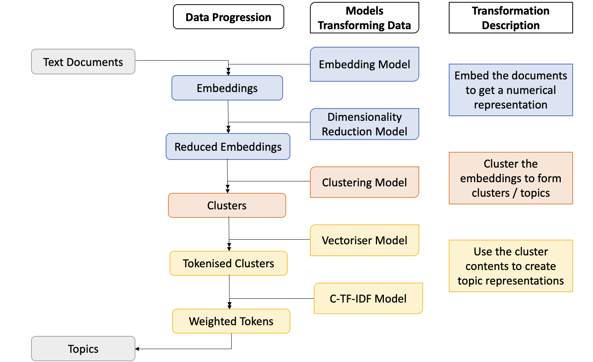
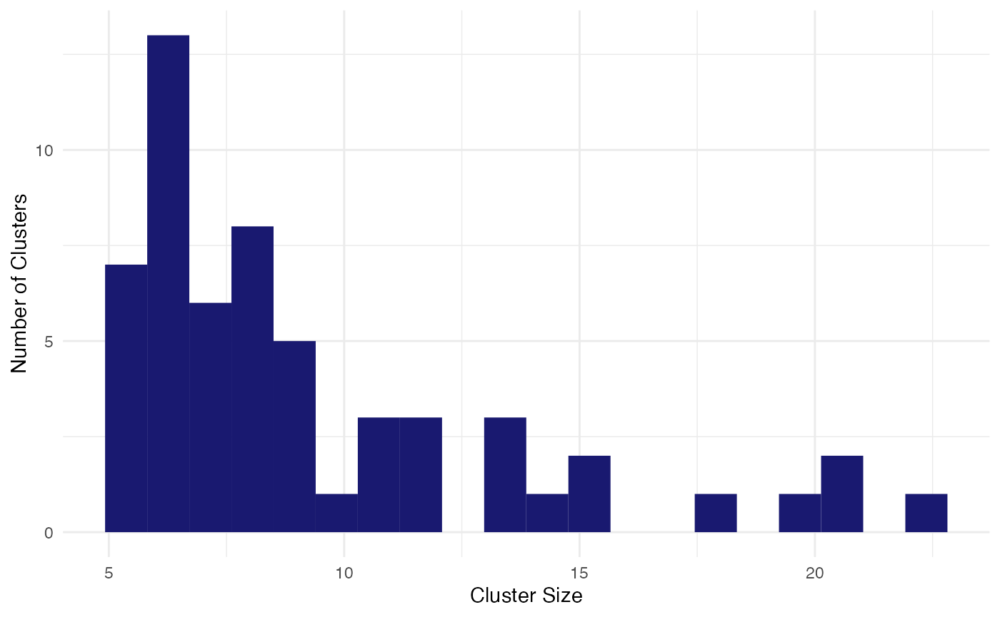

Modules
In the Bertopic Python Library by Maarten Grootendorst there are 6 sub-modules:
Embeddings - for transforming your documents into a numerical representation
Dimensionality Reduction - for reducing the number of features of the embeddings output
Clustering - finding groups of similar documents to represent as topics
Vectorisers - find the n-grams to describe each topic
c-TF-IDF - create topic-level (rather than document) bag of words matrices for representing topics
Fine-tuning topic representations - other tools for topic representations (includes generative AI/LLMs), you can read more about this in the Manipulating the Model vignette.

This vignette will show you how to use {BertopicR} to tune each module when creating your topic models.
Data
For demonstrative purposes, we’ll use {stringr}‘s ’sentences’ data set, which comes fairly clean. For help on cleaning text data visit ParseR/LimpiaR documentation. Let’s take a look at the first five posts for brevity.
sentences <- stringr::sentences
sentences[1:5]
#> [1] "The birch canoe slid on the smooth planks."
#> [2] "Glue the sheet to the dark blue background."
#> [3] "It's easy to tell the depth of a well."
#> [4] "These days a chicken leg is a rare dish."
#> [5] "Rice is often served in round bowls."Then we’ll turn the sentences into a data frame:
Embeddings
In order to work efficiently with text data, we need to turn the words into numbers. The current state-of-the-art approach to turning text into numbers, is contextualised word embeddings. We’ll use an MpNet model, ‘all-mpnet-base-v2’ to take our sentences and turn them into numbers (embeddings). This will allow us to find similarities and differences between our sentences, using standard mathematical techniques (don’t worry if this isn’t making sense right now, often the best way to learn is by doing).
In BertopicR you will usually either want to be making or doing with modules, or, compiling or fitting with models. We make components, we do actions on data with components. We compile our components into models, and then we fit our models to data.
Make the embedder
First we’ll make an embedder (or embedding_model) using the
bt_make_embedder_st function. Then we’ll embed our
sentences using the embedder.
TIP: It’s a good idea to save your embeddings, as when working with many documents this process will be time consuming.
embedder <- BertopicR::bt_make_embedder_st(
model = "all-mpnet-base-v2"
)Do the embedding
embeddings <- bt_do_embedding(
embedder,
df$sentences,
accelerator = NULL
)
#>
#> Embedding proccess finished
#> all-mpnet-base-v2 added to embeddings attributes
embeddings[1, 1:10]
#> [1] 0.0031732142 -0.0454455763 -0.0003524652 0.0046989718 0.0179691650
#> [6] -0.0300240479 -0.0278541707 -0.0199615918 -0.0032401842 0.0257827844Each row of our embeddings output represents one of our original sentences, and each column represents a different embedding dimension; there are 768 dimensions outputted by the ‘all-mpnet-base-v2’ mode
We take a peek at the first 10 columns (dimensions), of the first row of our embeddings and we see 10 floating point numbers.
Reducing Dimensions
The next step in the pipeline is to reduce the dimensions of our embeddings, we do this for two reasons:
to allow our clustering algorithm to run smoothly
to visualise our clusters on a plane (we will eventually reduce to 2 dimensions)
In machine learning more generally, dimensionality reduction is often an important step to avoid overfitting and the curse of dimensionality. In this example we will use the UMAP algorithm (however dimensionality reduction using PCA and truncatedSVD are also currently available) for more information on the UMAP algorithm - uniform manifold approximation and projection for dimension reduction - catchy, see UMAP Docs.
TIP: Like with embeddings, it’s a good idea to save your reduced embeddings, as reducing dimensions can be a costly process.
Make the reducer
We’ll use a low-ish value for n_neighbours (we have a small dataset) and an output with 5 dimensions (n_components = 5L). We’ll set the min_distance to 0, so that our dimensionality reduction model can place very similar documents very close together. We’ll set the metric to “Euclidean” see Embedding to non-Euclidean Spaces for alternatives.
reducer <- bt_make_reducer_umap(
n_neighbours = 10L,
n_components = 5L,
min_dist = 0L,
metric = "euclidean"
)Do the reducing
reduced_embeddings <- bt_do_reducing(
reducer, embeddings = embeddings
)
#> UMAP(low_memory=False, min_dist=0, n_components=5, n_neighbors=10, random_state=42, verbose=True)
#> Fri Oct 20 08:36:46 2023 Construct fuzzy simplicial set
#> Fri Oct 20 08:36:46 2023 Finding Nearest Neighbors
#> Fri Oct 20 08:36:47 2023 Finished Nearest Neighbor Search
#> Fri Oct 20 08:36:49 2023 Construct embedding
#> Fri Oct 20 08:36:50 2023 Finished embedding
reduced_embeddings[1:2, ]
#> [,1] [,2] [,3] [,4] [,5]
#> [1,] 5.893695 5.124340 8.918015 8.577352 -1.005369
#> [2,] 6.760569 5.225244 6.181620 8.503936 -1.818598We’ll take a peek at two of our rows which now represent the reduced dimension embeddings for each document. Notice that our numbers are floating points, but also that they are not bounded between -1 and 1.
The next step is to cluster our data. On a first pass, bertopic considers each discovered cluster a topic. Choice of clustering model and the selected parameters are therefore important. We’ll use an hdbscan cluster, as that’s what bertopic was initially built with.
Clustering
There is a lot to learn when it comes to clustering, and selecting the correct parameters is notoriously difficult - especially when clustering without pre-assigned labels, as most clustering tends to be. For this run we’ll use the hdbscan clustering algorithm, because we don’t know how many clusters we should look for in advance (which we should if using kMeans clustering for example).hdbscan documentation
It’s important to know that until you get down to the level of updating topic representations, in the bertopic pipeline 1 topic = 1 cluster. It’s therefore crucial to gather what information you can about your data to inform your clustering process.
Make the clusterer
We’ll stick with a Euclidean distance metric, we’ll reduce the min_cluster_size to 10, giving us a theoretical maximum of number of clusters as: length(sentences) / 10 and min_samples equal to 5. The relationship between min_cluster_size and min_samples is important, it will default to min_samples = min_cluster_size if not specified, but this is likely to have adverse effects on your clustering outputs when dealing with larger datasets (as you’ll likely want to raise the min_cluster_size parameter significantly). On the other hand, the hdbscan documentation claims that min_samples, a parameter inherited from dbscan, does not have such importance in the hdbscan algorithm - though they also say it remains the algorithm’s biggest weakness.
We’ll also set cluster_selection_method = “leaf”, this means we’ll tend to find many small clusters, rather than a few large clusters. This is another parameter which is fraught with danger, to get this right the first time is unlikely, and is likely to require trial and error, at least in the beginning.
clusterer <- bt_make_clusterer_hdbscan(min_cluster_size = 5L,
metric = "euclidean",
cluster_selection_method = "leaf",
min_samples = 3L)Do the clustering
clusters <- bt_do_clustering(clustering_model = clusterer, embeddings = reduced_embeddings)clusters is now a list of cluster labels, we have 720 labels in total - one for each sentence in {Stringr}’s sentences data set. The cluster labels are output as integers, but it’s important not to assume that they work like regular integers do. It’s not necessarily the case that cluster 1 is closer to cluster 4 than it is to cluster 15, the ordering of the labels can effectively be considered random.
As you most likely have no labels or a training/test/validation data set, you will have to rely on inspecting your clusters, remembering that in bertopic 1 cluster = 1 topic. To check whether our clusters make sense, we could draw upon our data analysis & visualisation tool kit, and inspect each cluster against every other. This would soon become intractable. Instead, we’ll take a quick look at the distribution and then we’ll use the bt_compile_model() and bt_fit_model() functions to get our topic models out.
Create a data frame
But first, we’re beginning to acquire a bunch of objects which may become hard to maintain. We can store them in a data frame:
data <- dplyr::tibble(sentence = tolower(sentences)) %>%
mutate(embeddings = list(embeddings),
reduced_embeddings = list(reduced_embeddings),
cluster = as.integer(clusters))If you want to save this data frame, you’ll need to save it as a .Rdata/.rds object, not as a .csv or .xlsx as it contains list columns.
Count the clusters
We can see the distribution via a histogram:
library(ggplot2)
#> Warning: package 'ggplot2' was built under R version 4.3.1
data %>%
filter(cluster != -1) %>%
count(cluster, sort = TRUE) %>%
ggplot(aes(x= n)) +
geom_histogram(fill = "midnightblue", bins = 20) +
theme_minimal() +
xlab("Cluster Size") +
ylab("Number of Clusters")
With the exception of the outlier group, the clusters are labelled in order of size:
data %>%
count(cluster, sort = TRUE)
#> # A tibble: 59 × 2
#> cluster n
#> <int> <int>
#> 1 -1 162
#> 2 0 22
#> 3 1 21
#> 4 2 20
#> 5 3 19
#> 6 4 18
#> 7 5 16
#> 8 6 15
#> 9 7 15
#> 10 8 14
#> # ℹ 49 more rows213/720 (29.6%) of data points were labelled as noise (cluster == -1), and upon a first inspection they do appear to be quite eclectic.
data %>%
filter(cluster == -1) %>%
slice(30:40) %>%
pull(sentence)
#> [1] "clothes and lodging are free to new men."
#> [2] "a salt pickle tastes fine with ham."
#> [3] "mud was spattered on the front of his white shirt."
#> [4] "the cigar burned a hole in the desk top."
#> [5] "the empty flask stood on the tin tray."
#> [6] "at that high level the air is pure."
#> [7] "steam hissed from the broken valve."
#> [8] "the sky that morning was clear and bright blue."
#> [9] "sunday is the best part of the week."
#> [10] "the third act was dull and tired the players."
#> [11] "corn cobs can be used to kindle a fire."But how do our other clusters look?
data %>%
filter(cluster == 0) %>%
sample_n(5) %>%
pull(sentence)
#> [1] "kick the ball straight and follow through."
#> [2] "the best method is to fix it in place with clips."
#> [3] "slide the catch back and open the desk."
#> [4] "the last switch cannot be turned off."
#> [5] "just hoist it up and take it away."
data %>%
filter(cluster == 1) %>%
sample_n(5) %>%
pull(sentence)
#> [1] "she saw a cat in the neighbor's house."
#> [2] "the hog crawled under the high fence."
#> [3] "it caught its hind paw in a rusty trap."
#> [4] "the stray cat gave birth to kittens."
#> [5] "the child almost hurt the small dog."The more clusters we look at, the more difficult it will become to figure out what’s happening…
data %>%
filter(cluster == 2) %>%
sample_n(5) %>%
pull(sentence)
#> [1] "a gold ring will please most any girl."
#> [2] "the knife was hung inside its bright sheath."
#> [3] "the vamp of the shoe had a gold buckle."
#> [4] "a brown leather bag hung from its strap."
#> [5] "fake stones shine but cost little."Inspecting each of these clusters and trying to figure out what each cluster means and how they inter-relate would soon become intractable for humans. Thankfully, within BERTopic there are quantitative methods already in place to aid this procedure.
Instead of looking at the individual posts in each cluster, we’ll attempt to summarise their contents with keywords and phrases. In order to this, we’ll make a vectoriser and a ctfidf model. After creating these models, we can use everything we’ve looked at so far to compile a model, fit the model on our data, and finally explore our topics and their representations.
Adjust the Representation
Make the vectoriser
For the vectoriser we’ll set the ngram range as c(1, 2) this means our topics can be represented as single words or bigrams. We’ll set stop_words to ‘english’ so that English stop words are removed and we’ll tell our vectoriser to only consider words that have a frequency of 3 or higher, so that rare words and chance occurrences don’t clog our representations too much. In practice, we will want to set a higher value for min_frequency as we’ll be working with significantly more data.
vectoriser <- bt_make_vectoriser(ngram_range = c(1, 2), stop_words = "english", min_frequency = 3L)Make the ctfidf model
Then we’ll create a ctfidf model which will allow us to represent each topic according to the words that are important to that topic (have high frequency) and distinct to that topic (have relatively low frequency in other topics):
ctfidf <- bt_make_ctfidf(reduce_frequent_words = TRUE, bm25_weighting = FALSE)Compile the model
We’ve already made our individual components, or modules, and
selected their parameters. We’ve already performed the embeddings and
dimensionality reduction, so bertopic allows us to skip these steps
easily by feeding in empty models to the bt_compile_model
function for embedding and reducing. We can also skip clustering, but
won’t for this task as it adds extra complexity, the clustering we
performed above with bt_do_clustering was just to explore how our
clusterer would work in practice.
N.B. In practice you will need to pause and explore your parameters in more depth.
topic_model <- bt_compile_model(
embedding_model = bt_empty_embedder(),
reduction_model = bt_empty_reducer(),
clustering_model = clusterer,
vectoriser_model = vectoriser,
ctfidf_model = ctfidf
)
#>
#> Model built & input model updated accordingly
topic_model$topics_
#> NULLFit the model
We feed in our reduced embeddings rather than the original embeddings, this allows us to skip steps in the workflow; this can save us a lot of time, particularly when we have many documents.
bt_fit_model(topic_model, data$sentence, embeddings = reduced_embeddings)
#>
#> Model is fitted
topic_model$topics_[1:10]
#> [1] -1 -1 33 17 17 9 56 14 -1 -1NOTE: The bertopic model you are working with is a pointer to a python object at a point in memory. This means that the input and the output model cannot be differentiated between without explicitly saving the model before performing this operation. We do not need to specify an output to the bt_fit_model function as the function changes the input model in place. Note the output of topic_model$topics_ after the bt_compile_model() function and the bt_fit_model() function, before calling bt_fit_model(), when the model has not yet been fitted to any data, the model’s topics attribute is NULL, after being fitted, the topics attribute contains a list of topics related to the documents to which the model was fitted. Similarly, if we assigned an output to bt_fit_model, the output model would be the same as the input model:
example_model_compiled <- bt_compile_model(
embedding_model = bt_empty_embedder(),
reduction_model = bt_empty_reducer(),
clustering_model = clusterer,
vectoriser_model = vectoriser,
ctfidf_model = ctfidf
)
#>
#> Model built & input model updated accordingly
example_model_compiled$topics_
#> NULL
example_model_fitted <- bt_fit_model(example_model_compiled, data$sentence, embeddings = reduced_embeddings)
#>
#> Model is fitted
example_model_compiled$topics_[1:10]
#> [1] -1 -1 33 17 17 9 56 14 -1 -1
example_model_fitted$topics_[1:10]
#> NULLWe can create a look up table to join our sentences to their topic labels and their topic descriptions and join this information with our original dataframe:
topic_representations <- topic_model$get_topic_info()
topic_rep_lookup <- topic_representations %>%
select(topic = Topic, description = Name, topic_size = Count)
data <- data %>%
mutate(topic = topic_model$topics_) %>%
left_join(topic_rep_lookup)
#> Joining with `by = join_by(topic)`
(data <- data %>%
relocate(sentence, topic, topic_size, description)
)
#> # A tibble: 720 × 7
#> sentence topic topic_size description embeddings reduced_embeddings cluster
#> <chr> <dbl> <dbl> <chr> <list> <list> <int>
#> 1 the birch… -1 162 -1_deep_ni… <dbl[…]> <dbl [720 × 5]> -1
#> 2 glue the … -1 162 -1_deep_ni… <dbl[…]> <dbl [720 × 5]> -1
#> 3 it's easy… 33 7 33_pipe_sp… <dbl[…]> <dbl [720 × 5]> 35
#> 4 these day… 17 11 17_rare_se… <dbl[…]> <dbl [720 × 5]> 21
#> 5 rice is o… 17 11 17_rare_se… <dbl[…]> <dbl [720 × 5]> 21
#> 6 the juice… 9 14 9_taste_cu… <dbl[…]> <dbl [720 × 5]> 10
#> 7 the box w… 56 5 56_box_squ… <dbl[…]> <dbl [720 × 5]> 50
#> 8 the hogs … 14 13 14_spring_… <dbl[…]> <dbl [720 × 5]> 12
#> 9 four hour… -1 162 -1_deep_ni… <dbl[…]> <dbl [720 × 5]> -1
#> 10 a large s… -1 162 -1_deep_ni… <dbl[…]> <dbl [720 × 5]> -1
#> # ℹ 710 more rowsThe df compiled is a common place for everything we have generated so far, in practice we don’t really need the cluster column now that we have the topic column, similarly, they provide the same information. Topics and clusters should have largely the same labels, the only discrepancy would be where multiple clusters/topics are the same size.
Now that you have your model up and running, you could look at the Manipulating the Model vignette to see how you could investigate and alter the topics that have been identified.